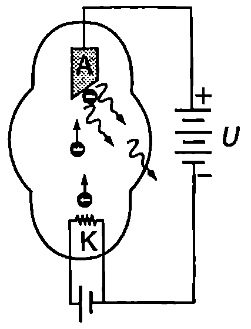
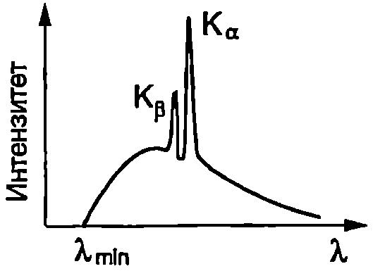
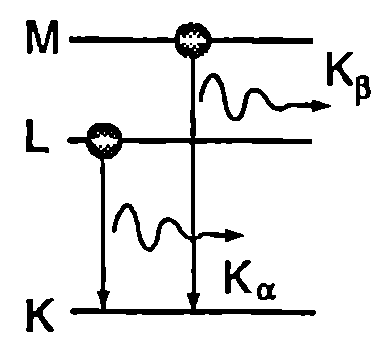

Първата Нобелова награда по физика е присъдена на германския физик Вилхелм Рьонтген за откриването през 1895 година на неизвестно по онова време излъчване, което той нарича X-лъчи. Днес X-лъчи или рентгенови лъчи се нарича късовълновото електромагнитно лъчение с дължина на вълната в интервала приблизително от $10^{-8}$ m (10 nm) до $10^{-12}$ m ($10^{-3}$ nm). Откриването на рентгеновите лъчи дава мощен тласък в развитието на физиката и раз крива широки възможности за практическо приложение на тези лъчения. Изследванията на рентгеновите лъчи дават нови, убедителни доказателства за правилността на фотонната теория.
Спектър на рентгеновото излъчване
Рентгеново излъчване се получава, когато метална мишена се бомбардира от електрони с голяма кинетична енергия. За тази цел се използват устройства, наречени рентгенови тръби (Фиг. \ref{fig:102.1}). Във вакуумирана тръба се разполагат един срещу друг два електрода нагреваема жичка (катод К) и метална пластина (анод А), между които се подава високо напрежение (няколко десетки или стотици киловолта). От нагрятата жичка, която е свързана към отрицателния полюс на източника на високо напрежение, чрез термоелектронна емисия се отделят електрони. Те се ускоряват от електричното поле и се насочват към металната пластина, служеща за мишена. При взаимодействието на електронния сноп с мишената възникват два вида рентгеново излъчване:

`Фиг. 102.1`
1. Спирачно рентгеново излъчване. При удара с атомите на веществото на мишената около 99% от кинетичната енергия на електронния сноп се преобразува в топлина и мишената се загрява, което налага рентгеновите тръби да се охлаждат с вода. Когато срещнат на пътя си атомни ядра обаче, част от електроните рязко се забавят (движат се с много голямо ускорение) и излъчват: кинетичната енергия на тези електрони частично или изцяло се преобразува в енергия на електромагнитно лъчение от рентгеновата област. Това излъчване се нарича спирачно и има непрекъснат спектър, който не зависи от вида на атомите на мишената, а се определя единствено от кинетичната енергия на електроните. Спектърът на спирачното рентгеново излъчване е с рязка късовълнова граница $\lambda_{\min}$ (Фиг. \ref{fig:102.2}). При увеличаване на приложеното към рентгеновата тръба ускоряващо напрежение границата $\lambda_{\min}$ се отмества към по-малките дължини на вълната.
Наличието на късовълнова граница в спектъра на рентгеновите лъчи се обяснява от фотонната теория. При ускоряване от напрежение $U$ електронът получава кинетична енергия $eU$. В резултат на взаимодействието с мишената електронът губи частично или изцяло тази енергия. От закона за запазване на енергията следва, че когато цялата кинетична енергия на електрона се преобразува в енергия на един единствен фотон, този фотон има максимална честота $\nu_{\max}$ (енергия $E_{\max}$): $$h\nu_{\max} = eU \text{ или } \lambda_{\min} =\frac{c}{\nu_{\max}} = \frac{hc}{eU}. $$
2. Характеристично рентгеново излъчване. В спектъра на рентгеновото излъчване се наблюдават и тесни спектрални линии с голям интензитет (Фиг. \ref{fig:102.2}), които се наслагват върху непрекъснатия спектър на спирачното излъчване. Тези спектрални линии се наричат характеристични линии, тъй като тяхното положение (дължина на вълната) зависи от веществото на мишената. Когато бомбардиращите мишената електрони имат достатъчно голяма кинетична енергия, те могат да избият електрони от вътрешните електронни слоеве на атома (от К, L или от M слоя). Получената по този начин електронна ваканция се запълва от електрон от някой от по-горните електронни слоеве, който преминава в свободното състояние. Този преход е съпроводен с излъчване на фотон, чиято енергия е равна на разликата в енергиите на двете нива.

`Фиг. 102.2`

`Фиг. 102.3`
Ще разгледаме случая, когато бомбардиращият електрон създава ваканция в най-вътрешния (К слой) на атома. Когато тази ваканция се попълва с електрон от от следващия по енергия L слой (Фиг. \ref{fig:102.3}), излъченият при този преход фотон съответства на т.нар. $K_\alpha$ линия от характеристичния спектър (Фиг. \ref{fig:102.2}). При запълване на ваканцията с електрон от M слоя, излъченият фотон съответства на характеристичната $K_\beta$ линия.
Дифракция на рентгеновите лъчи
През 1912 година немският физик Макс фон Лауе теоретично обосновава възможността кристалите, които са изградени от симетрично разположени редици от атоми, да се използват като дифракционни решетки за рентгеновите лъчи. След като преминат (или се отразят) през кристала, рентгеновите лъчи се разделят на отделни снопове, които попадат върху фотографски филм и създават дифракционна картина, съставена от симетрично разположени петна. Тези петна са резултат от интерференцията на вторичните вълни, излъчени от много голям брой симетрично разположени атоми, действащи като дифракционна решетка. Като се анализира разположението на петната и техният интензитет, получава се информация за структурата на кристала (за начина на подреждане на атомите) и се определя разстоянието между тях. Този метод за изследване на вътрешната структура на веществата се нарича рентгеноструктурен анализ. Чрез анализ на дифракционните картини, получени с рентгенови лъчи, се определя също така структурата на метални сплави, органични съединения и биологични обекти с периодична структура (например молекулите на ДНК, на хемоглобина и др.).
Приложение на рентгеновите лъчи в медицината
Поглъщането на рентгеновото лъчение от веществото се различава от поглъщането на светлината. Например прозрачното за светлината оловно стъкло почти изцяло поглъща рентгеновите лъчи и се използва за защита на работещите с рентгенова апаратура. Обратно, рентгеновите лъчи преминават с минимално поглъщане през алуминиево фолио, което е непрозрачно за светлината. Различните органи и тъкани на човешкото тяло поглъщат рентгеновите лъчи в различна степен: костите и други образования, съдържащи калций, ги поглъщат по-силно от меките тъкани, на което се основава използването на рентгеновите лъчи в медицината за наблюдаване на вътрешни органи на човека: кости, бели дробове и др. Изследваната част от тялото се “осветява” с рентгеновите лъчи, които частично се поглъщат от нея, а преминалите лъчи попадат върху екрана на флуороскоп или върху касета с фотографски филм. На екрана образът на обектите, които по-силно поглъщат рентгеновите лъчи (например костите), е тъмен, а на по-слабо поглъщащите светъл (образът върху проявения фотофилм е негативен костите са светли). В съвременните компютърни рентгенови томографи тесен рентгенов сноп пробягва (сканира) послойно дадена част от човешкото тяло и образите на отделните слоеве се получават след компютърна обработка на разпределението на интензитета на преминалото през тях лъчение.
Задачи
-
Ускоряващото напрежение на рентгенова тръба е 40 KV. Определете късовълновата граница $\lambda_{\min}$ на непрекъснатия спектър на спирачното рентгеново излъчване.
-
Енергията на електроните от различните атомни слоеве може да се оцени по следната формула: $E = -(Z-n)^2 (13,!6~\mathrm{eV})$, където $Z$ е атомният номер, а $n$ е броят на вътрешните електрони, които екранират ядрото ($n= 1$ за електрон от К слоя; $n = 9$ за електрон от 2 слоя: 2 електрона от К слоя и останалите 7 електрона от 1 слоя). Оценете енергията и дължината на вълната на фотона от $K_\alpha$ линията на волфрама ($Z = 74$).